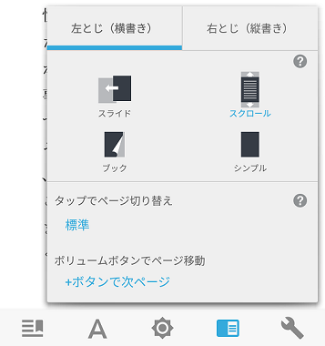

それで、
Webと本の未来どうなる？
もっと読みやすく美しいレイアウトをWebでも本でも
- スクロールとページめくりのそれぞれの使いやすさ
- 〈ページ〉のレイアウト
Webでも本でもリンクを張って参照したり気になる箇所をマークしたり注釈をつけたりできること
- Web/EPUB Annotationの標準
- 「Web出版物」を一意に表す識別子（URIなど）とその中身の特定箇所を指す識別子
Webと本をもっとアクセシブルで便利に
- コンテンツが「Web出版物」の標準に従うことで、コンテンツ内のナビゲーションや、音声読み上げでの利用がより便利に
- コンテンツにセマンティックなメタデータ
- DPUB-ARIA (Digital Publishing WAI-ARIA)
「Web出版物」を先取りしてる事例
- Webブラウザでのページネーション
- 複数のWebページをスクロールで連続して読む
- ページ／スクロール、横書き／縦書き切り替えUIの例（Kinoppy）
パネル・ディスカッション： Webと本の未来はどうなる？